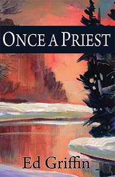
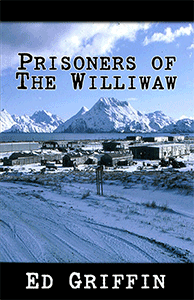
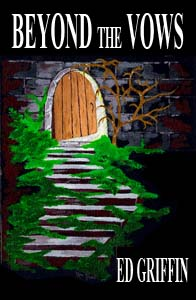

 |
ONCE
A PRIEST “You’re gonna die, preacher.” Young, idealistic Catholic priest Ed Griffin ignores the bystanders and marches on from Selma to Montgomery with Martin Luther King. He feels like he’s living his faith. When he returns to his suburban parish in Parma, Ohio, he discovers that people have complained to the pastor. “Either you get rid of that nigger-lover, or we won’t give you another dime.” Father Griffin is moved to Cleveland’s slum. Three years later, in 1968, Griffin leaves the priesthood, but he doesn’t leave the rich tradition he’s learned from the church, the tradition that says respect others and help those in need. Once A Priest chronicles his struggle to find spirituality in his marriage, in his family, and in his career. Purchase a copy at Cordillera North Publications. A printed copy, signed by the author, is $15.00 Ebook versions are available from Amazon.com for $2.99 |
| DYSTOPIA
Dystopia is a society of human misery, squalor, disease, terror and overcrowding. It is the opposite of Utopia. This is a book about going to prison. Mike Oulton went to prison for trying to smuggle fifteen kilos of cocaine into the United States. Ed Griffin went to prison to cause a revolution. He wanted men to write their stories and when the public discovered the horror of prison, the walls would come tumbling down. Mike counts the years and the days until he can get back on the street; Ed numbers the converts to his revolution. One day they meet in a classroom and neither is the same again.... Purchase a copy at Cordillera
North
Publications. |
|
 |
Pilar Marti, the first female Secretary-General of the United Nations, struggles to reform this tired, irrelevant bureaucracy. When the United States vetoes a food and water proposal for Somalia, Pilar calls for a Constitutional Convention to eliminate the veto and reform the UN. She attacks the veto with an unusual weapon - the American Constitution. What's good for America - democracy - is good for the UN. Purchase a copy at Cordillera
North
Publications. |
|  |
What would happen if three hundred hardened convicts petitioned the United States Government for an abandoned island where, accompanied by their families, they would be set free to earn their own way? Prisoners of the Williwaw is the story of the power struggle between the idealistic leader of this expedition, convict Frank Villa, and a smooth prison boss, James T. Gilmore. Frank Villa opens a school, arranges jobs for people in a small assembly factory and calls for free elections. 'Boss' Gilmore opens a house of prostitution, sells booze, drugs, and guns, and schemes to take over the island one way or another. Purchase a copy at Cordillera
North
Publications. |
|  |
BEYOND THE VOWS Father JP Lacey
throws himself into the priesthood after
twelve years in the seminary. The year is 1964. He's going to free the
captives and give sight to the blind as the prophet Isaiah has
directed. He hears confessions, chaplains parish groups and struggles
to bring God into the lives of the people. But nothing works as he
anticipated. The world is in tumult with the death of JFK, civil rights
demonstrations, the war in Vietnam and the sexual revolution. Even the
rock-strong Catholic Church has been shaken by the second Vatican
Council. The ebook version is available from Amazon.com |